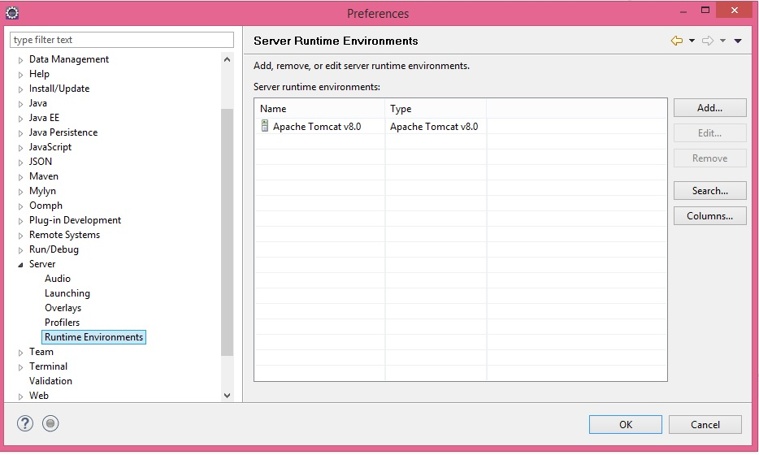
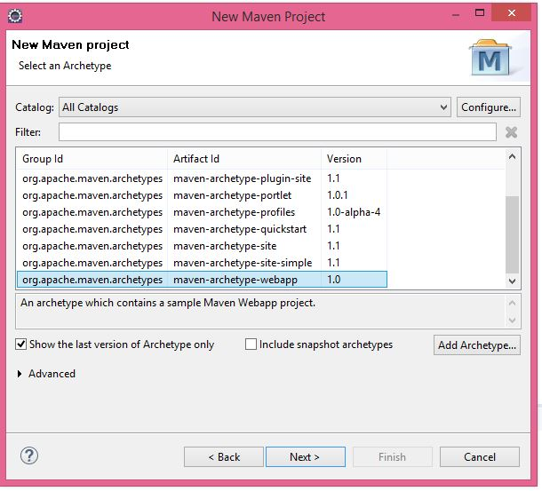
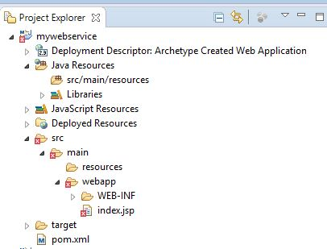
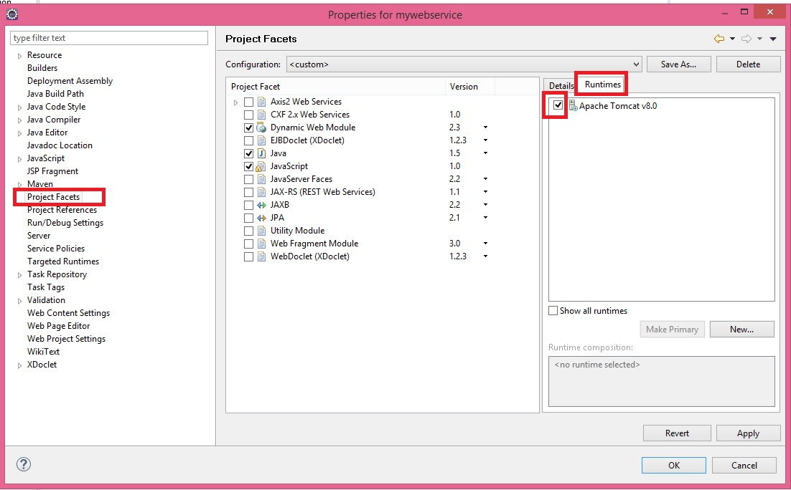
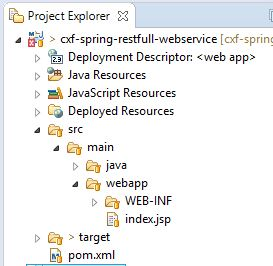
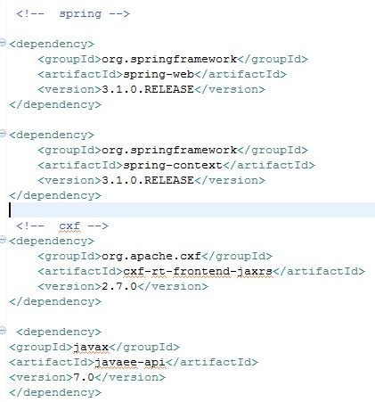

First Step : Installing Tomcat 8.0 in eclipse.
- Download tomcat 8.0 server from https://tomcat.apache.org/download-80.cgi
- Extract it and put it in a local drive
- Open Eclipse-Neon and go to Windows-->Preferences-->Server-->Runtime Environment . Then Click "Add" and select the Tomcat 8.0 server path 
- Click "OK"
Second Step : Create Maven Web-app Project.
- In Eclipse go to File-->New-->Maven Project
- Select webapp project from archtype 
if it comes up with the following error: 1) error 2) no java folder inside the src folder
Then do the following:
Select Project and Go to Properties and check Tomcat 8.0
Create new "java" folder inside src folder
Final strucutre will be like this:
Third Step : Add Dependency to Maven Project.
The following Dependency is MUST to work with Spring and apache CXF:

javax is not MUST.
Now start Test all the steps that we have done so far